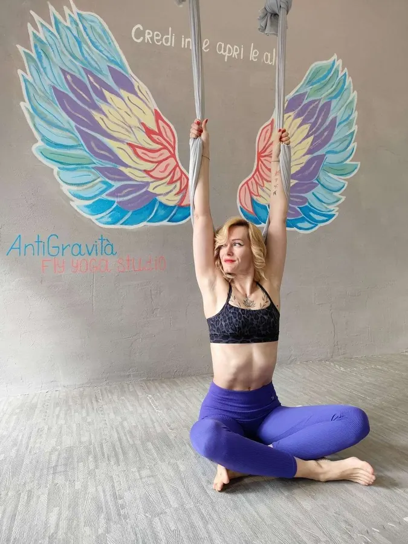

Chi Siamo — Anna, Istruttrice di Fly Yoga e Massaggi a Trieste
Ciao, mi chiamo Anna e sono felice che tu sia qui. Se sei arrivata su questa pagina vuol dire che il Fly Yoga ti incuriosisce: lascia che ti racconti qualcosa di me, così sai chi ti accompagnerà in questo percorso.
Sono un'istruttrice di Fly Yoga, originaria dell'Ucraina, e oggi vivo e lavoro a Trieste. Il 10 marzo 2024 ho realizzato un sogno che coltivavo da tempo: aprire il mio studio di Fly Yoga in città. Amo questa disciplina e ho sempre desiderato condividerla; mi rende felice vedere che, dopo la prima lezione, le persone tornano e fanno di questa pratica una loro abitudine.
Il mio cammino nel Fly Yoga è iniziato in Ucraina, dove mi sono formata in modo professionale prima di insegnare. Insegno dal 2020: sono ormai più di cinque anni che porto avanti questo lavoro con allievi di ogni livello.
Nel tempo ho costruito uno stile mio, che intreccia yoga tradizionale, elementi di acrobatica e sequenze originali pensate per l'amaca. Le mie lezioni non sono mai fotocopia l'una dell'altra: creo di continuo nuovi esercizi, transizioni e combinazioni, perché ogni incontro resti vivo e stimolante.
Sono una persona solare e diretta, e ci tengo a creare un ambiente sereno e accogliente, in cui ognuno possa sentirsi a proprio agio fin dal primo respiro.
Ti aspetto per scoprire insieme il Fly Yoga: leggerezza, forza ed equilibrio, un movimento alla volta.
Esperienza e Formazione
La mia formazione nel Fly Yoga è iniziata in Ucraina, dove ho studiato la disciplina in modo professionale prima di portarla in aula. Insegno dal 2020: oltre cinque anni di pratica continuativa, accanto a chi sale sull'amaca per la prima volta come a chi cerca un lavoro più avanzato. Il 10 marzo 2024 ho aperto il mio studio di Yoga a Trieste, in Via Jacopo Cavalli 10/c: un metodo che in città ancora non c'era e che oggi posso condividere ogni giorno. Come istruttrice di Fly Yoga a Trieste credo molto nella pratica costante: è da lì che nascono i risultati che durano.
Le Mie Competenze
- Fly Yoga / Yoga Aereo: lezioni di gruppo (massimo 8 persone), private e in duetto, con sequenze originali in amaca per decompressione della colonna, forza e flessibilità.
- Massaggio Olistico: un lavoro che ascolta corpo e mente insieme, per sciogliere le tensioni e ritrovare il proprio equilibrio.
- Massaggio con Pietre Calde (Hot Stone): il calore arriva dove le contratture resistono di più e fa cedere la rigidità.
- Fly Massaggio: un trattamento che eseguo in sospensione sull'amaca — un'esperienza che a Trieste trovi solo qui.
Il Mio Approccio
Ogni corpo ha la sua storia, i suoi tempi e i suoi limiti: per questo non insegno una lezione "uguale per tutti" e adatto ogni pratica e ogni massaggio a Trieste alla persona che ho davanti. Cambio spesso sequenze e proposte per tenere il lavoro stimolante senza mai mettere da parte la sicurezza. Il mio obiettivo non è farti copiare una posizione, ma accompagnarti verso un benessere concreto e duraturo, in uno spazio sereno dove puoi davvero sentirti a tuo agio. Se vuoi, scrivimi: troviamo insieme il punto da cui partire.

Domande Frequenti su AntiGravità Trieste
Anna, originaria dell'Ucraina, insegna Fly Yoga dal 2020 con oltre 5 anni di esperienza. Ha aperto lo studio AntiGravità a Trieste il 10 marzo 2024, sviluppando uno stile personale che unisce yoga tradizionale, acrobatica e sequenze originali in amaca.
Anna insegna Fly Yoga dal 2020 — oltre 5 anni di esperienza. Si è formata professionalmente in Ucraina e ha portato questa disciplina unica a Trieste aprendo lo studio nel 2024.
Sì, oltre al Fly Yoga offriamo massaggi professionali a Trieste: massaggio olistico (40€), pietre calde / hot stone (50€) e il Fly Massaggio esclusivo eseguito in amaca (50€) — unico a Trieste. Scopri tutti i massaggi.
Lo studio si trova in Via Jacopo Cavalli 10/c, 34129 Trieste. Puoi contattarci al +39 351 857 3757 o via WhatsApp per prenotare yoga o massaggi. Vedi la mappa.
Inizia il tuo percorso con noi: